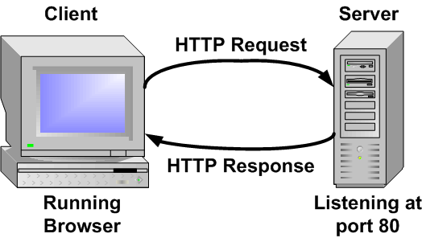

Programando mi primer blog con Django
Por DjangoFriends / @pathsr, @amapel, @kary, @aura, @jesus, @rctorr
Gracias a:
- Telmexhub
- Equipo de apoyo / mentores
- Asistentes al taller que han decidido dedicar unas horas de su vida (o-O)_/
- Comunidad de DjangoGrils
- A toda la comunidad de Software Libre
DjangoFriends
Somos una comunidad donde aprendemos y compartimos Django, Python, HTML5, CSS3, Javascript (JS), Diseño grafico, ideas, proyectos, comidas y todo lo que tenga que ver con el diseño y desarrollo tanto de sitios web como de aplicaciones web.
DjangoFriends
se acabó el rollo...
A crear mi primer blog
Etapas:
Hagamos comunidad, necesitamos de tu ayuda
- AGRUPARSE A LA IZQUIERDA si sabes instalar software, sabes conoces algún lenguaje de programación o simplemente te entiendes bien con las máquinas
- AGRUPENSE A LA DERECHA si lo tuyo es el diseño gráfico, las artes visuales, el comercio, o simplemente que abra una pestaña y abro todo lo que puedo un ojo
Forma de trabajo
- Tutorial DjangoGrils
- Formato taller, se muestra en pantalla como se hace y nos van siguiendo
- Auto dirigido, todos aquellos cuyas habilidades y experiencia les permita seguir por si mismos el tutorial
- Contamos con el equipo de apoyo para ayudar a quien se vaya atorando en alguna tarea, instalación o simplemente algo no funcione
- Sin embargo la idea es que todos se vuelan equipo de apoyo
La consola es su amiga, huuuuu! (cap. 2)
Leer y realizar los ejercicios
Herramientas (Instalación)
Herramientas (Instalación)
- Git (cap. 11)
- IPython: $ pip install ipython
- Django (cap. 7)
- Verificar instalación Django:
- $ python
- import django
- django.VERSION
- Crear cuenta en github.com
- Crear cuenta en pythonanywhere.com
Y ahora ¿cómo funciona Internet? (cap. 1)
- Revisar concepto de cliente - servidor
- ¿Qué es un cliente?
- ¿Qué es un servidor?
Introducción a Python (cap. 5)
La tarea:
¿Las peticiones que hace un navegador a un servidor web de que tipo son?
- Las peticiones se realizan utilizando el protocolo HTTP
- El protocolo HTTP es soportado por el protocolo TCP (Transmision Control Protocol)
La tarea:
- El protocolo TCP lo primero que hace es establecer una conexión entre el cliente y servidor y luego entonces transmite los datos.

La tarea:
- Las peticiones HTTP se responden bajo demanda y son unidireccionales
- Los Websockets también funcionan sobre TCP (orientados a conección) pero permiten una comunicación bidireccional
La tarea:
- El 17 de marzo del 2016 publicaron Django Channels
- Puede ser usado apartir de Django v1.9 como un modulo externo, pero se planea que para Djnago v1.10 ya sea parte del núcleo
- El artículo propone crear con Django una chat con actualizaciones en tiempo real
Introducción a Python
¿Dudas?
Python:
- Tipos: Números y Cadenas
- Operadores: + y *
- Funciones: upper() y len()
- Errores
- Variables
- Listas
- Diccionarios
Python:
- Comparaciones: <, >, <=, >=, and y or
- Lógicos: True, False
- Creando archivos .py
- Tomando decisiones if-elif-else
- Funciones: def
- Ciclos for
Python:
Hagamos un ejemplo
Consiga la lista del nombre y email de 5 compañeros, cree una variable que contenga esta lista y luego obtenga los siguientes resultados:
- Imprima la lista en orden alfabético con nombre y email
- Imprima la lista con sólo el nombre pero indique cuantas letras tiene cada nombre.
- Imprima la lista con sólo el dominio del email, en otras palabras imprima la lista de los dominios de donde provienen las emails
Python:
Hagamos un ejemplo
... dedos a la obra!
Django
- Framework
- ¿Porqué Django?
Django en acción
El primer proyecto (cap. 8)
Modelando la realidad
Modelos en Django (cap. 9)
Modelos
- Análisis (hay que pensar!)
- Nos convertimos en detectives y damos caza a las entidades (objetos), sus propiedades y acciones
- El uso de piedra y cincel están permitidos
Modelos
- ¿Ya tienes tú modelo labrado en piedra?
- Es hora de describirlo de forma que Django lo entienda
Administrado de Django (cap. 10)
- El modelo implica el uso de una base de datos
- El administrador nos simplifica el mantenimiento de la información en la base de datos
- Cuando las cosas se complican llame a su Administrador de Bases de Datos de cabezera
Administrado de Django (cap. 10)
Si has llegado hasta aquí...
Felicidades!
ha sido un gran paso para la humanidad ;)
Creando mi primer blog con Django
Día 4
Por: @pathSanch, @amapel, @kary, @rctorr
En gitter nos encuentran como:
Creando mi primer blog con Django
La presentación en línea sin necesidad de descargar gracias a github en:
¿Desplegar o Despegar?
(cap. 11)
Desplegar
- Crear un repositorio local o repo local
- Publicar el repo en github
- Preparar pythonanywhere.com y clonar repo
Desplegar
¡decirle al mundo que la vida virtual existe!
Direcciones o URL
(cap. 12)
URL's
- ¿Alguién las conoce?
- Revisando mysite/urls.py
- El famoso Regex
- Controlado las peticiones con blog/urls.py
Vistas, respondiendo a las peticiones
(cap. 13)
Vistas
- Trabajando con blog/views.py
- Mostrando la lista de artículos
- ¿Y el html apá?
Hagamos una página estática con HTL5 y CSS3
(caps. 14 y 18)
HTML5 y CSS3
- Bosquejo / Diseño (nuevamente a donde quiero llegar)
- Marcado define la estructura del contenido (HTML5)
- Forma y presentación para ponernos hermosas(os) (CSS3)
- Interacción, efectos, animación (HTML5+CSS3+Javascript)
HTML5 y CSS3
- Crear una carpeta en Escritorio (Desktop) llamada pagina-ejemplo/
- Crear el archivo index.html
- Crear carpeta css/
- Crear archivo css/main.css